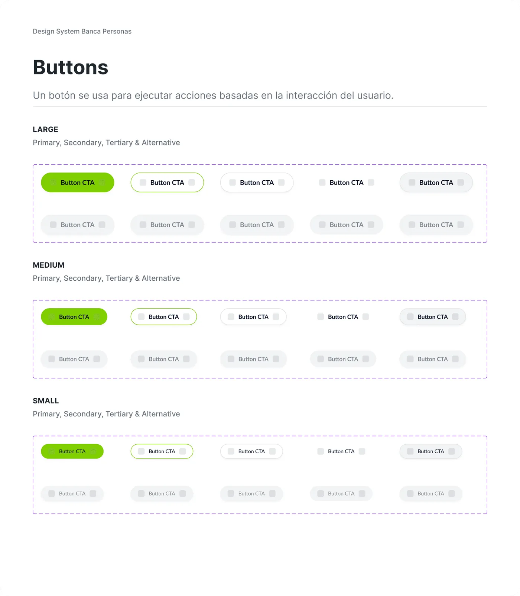
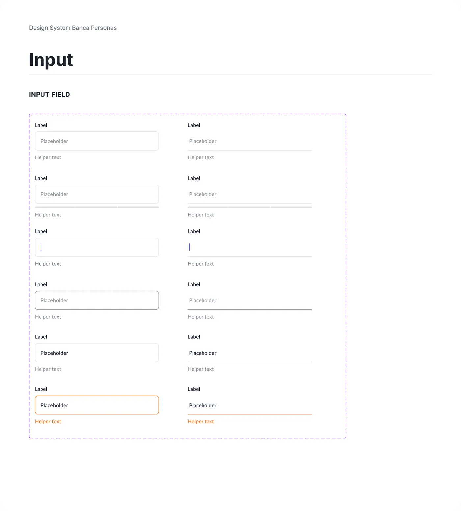

Caso de estudio · 02 · Sistema de diseño
Design System
El primer sistema de diseño de Tu Financiera, adoptado por diseño y desarrollo.
Un mismo lenguaje de tokens, estilos y componentes, creado desde cero durante el rediseño de una app con más de 80.000 usuarios activos (25.000 antes del lanzamiento).
De pantallas armadas a mano a una fuente en la que confían los dos equipos
El primer sistema de diseño de Tu Financiera se convirtió en la forma estándar de construir la app, no en una librería opcional. Los diseñadores lo usan cientos de veces por semana, y los desarrolladores construyen con los mismos nombres y valores.
Componentes
Inserciones de componentes por semana
Variables de diseño
Un rediseño completo, sin una base compartida
El sistema empezó junto con el rediseño de la app de Tu Financiera, lo que significaba 14 flujos nuevos diseñados por un equipo de tres para una app que usan decenas de miles de personas. Sin una base compartida, cada flujo nuevo iba a sumar su propia versión de los mismos botones, campos y tarjetas.
Ver el caso de estudio de la app de Tu Financiera →Sin UI kit, y la idea de construir uno
Antes no había UI kit ni guía de estilos. La interfaz tenía muchas variaciones y había perdido consistencia. El sistema fue idea mía. Lo investigué, lo propuse, lo construí y lo sigo escalando.
Cada pantalla se armaba a mano
El mismo botón, campo o tarjeta variaba en color, espaciado y tamaño de un flujo a otro. Los desarrolladores tenían que adivinar, o pedir valores que solo existían en el archivo de un diseñador.
Inconsistente para los usuarios, lento para el equipo
- 01El mismo elemento construido de cinco maneras distintas
- 02Sin un vocabulario común entre diseño y código
- 03Handoffs trabados en valores que nadie podía señalar
Lo difícil no fue dibujar los componentes. Fue lograr que dos equipos confiaran en una sola fuente y construyeran a partir de ella.
Tres capas, para que un cambio actualice todo lo que está arriba
Cada capa se apoya en la de abajo. Cambiás un valor en la base y cada estilo y componente que lo usa se actualiza de forma predecible, en diseño y en código.
Nombrar la intención, no el valor
Las variables guardan las decisiones base de color, tipografía, espaciado y radio. Los valores de marca como BlueDark o PositiveGreen viven en una colección global, y tokens semánticos como primary-text, buttons, o action-green apuntan a ellos. Una pantalla pide “texto principal”, nunca un código hex.
Nombrar por rol (background-primary, no “gris claro”) también prepara el próximo paso. Hoy el sistema funciona en modo claro, y el modo oscuro solo va a necesitar valores nuevos para los mismos nombres.

Las decisiones repetidas pasan a ser un clic
Los estilos publicados se apoyan en las variables y convierten definiciones que el equipo usaba una y otra vez en opciones reutilizables.

Los patrones reales de la app, con todos sus estados
Los componentes combinan estilos y tokens en los patrones que la app realmente usa. Cada uno sale con su set completo de tamaños y estados, así el comportamiento es el mismo en todos lados.
Qué se volvía componente era simple, los elementos que más usábamos y más reconstruíamos. Arreglar un componente lo arregla en todos los lugares donde se usa.


Un sistema solo cuenta si la gente lo usa
Cada componente está documentado y sincronizado con desarrollo, así el archivo y el código describen lo mismo. Los cambios viajan con el trabajo, en los mismos sprints de Scrum que las funciones que los necesitan.
- 01Adoptado por 2 equipos, diseño y desarrollo
- 02Más de 500 inserciones de componentes por semana
- 03Componentes documentados y sincronizados con 4 desarrolladores en sprints de Scrum
Cualquiera puede pedir, una persona aprueba
Presenté el sistema con anotaciones en Figma y llamadas de recorrido. Los pedidos de cambio llegan de diseñadores, desarrolladores, stakeholders y el PM. Los diseñadores los suman al sistema, y yo los apruebo antes de publicarlos.
La forma estándar de construir
Hoy el sistema sostiene la app rediseñada de Tu Financiera, que se lanzó con un NPS de +73,5 y creció a más de 80.000 usuarios activos.
Variables de diseño
Estilos publicados
Componentes
Inserciones de componentes por semana
- 01Los diseñadores prototipan más rápido
- 02Llegan menos errores visuales a la app
- 03El handoff a desarrollo es más rápido
- 04Los productos se ven y se comportan de forma consistente
Un sistema es un hábito, no un archivo
Que el sistema sea el camino fácil. La consistencia solo escala cuando usar el sistema es más fácil que reconstruir a mano.
La sincronización es una rutina. Mantener diseño y código alineados necesita un ritmo regular, no un handoff único.
Medir antes de construir. No registré cuántas variaciones tenía la UI anterior, así que puedo describir la mejora pero no demostrarla con números. En mi próximo sistema voy a auditar primero, y después medir el tiempo de handoff y los errores visuales.
Modo oscuro. Como los tokens tienen nombre por rol, significa valores nuevos para los mismos nombres, no un segundo sistema.
También vale la pena ver


Construyamos algo que valga la pena lanzar
Briefs, colaboraciones o una consulta rápida. Leo todo y suelo responder en un par de días hábiles.